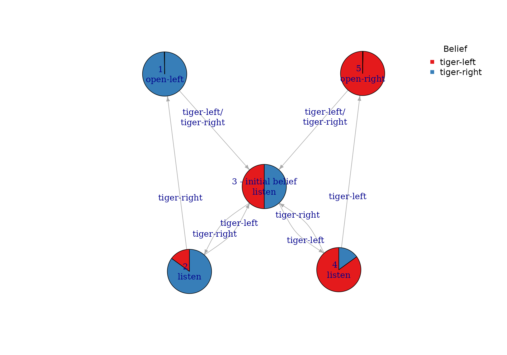
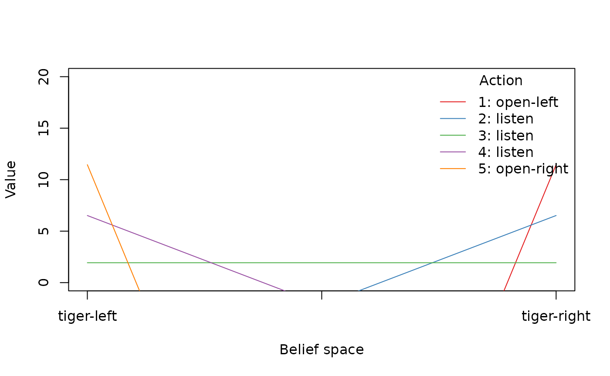

Getting Started with pomdp
Michael Hahsler and Hossein Kamalzadeh
Source:vignettes/pomdp.Rmd
pomdp.RmdIntroduction
The R package pomdp (Hahsler and Cassandra 2025),(Hahsler 2025) provides the infrastructure to define and analyze the solutions of Partially Observable Markov Decision Processes (POMDP) models. The package is a companion to package pomdpSolve which provides the executable for ‘pomdp-solve’ (Cassandra 2015), a well-known fast C implementation of a variety of algorithms to solve POMDPs. pomdp can also use package sarsop (Boettiger et al. 2021) which provides an implementation of the SARSOP (Successive Approximations of the Reachable Space under Optimal Policies) algorithm.
The package provides the following algorithms:
-
Exact value iteration
- Enumeration algorithm (Sondik 1971).
- Two pass algorithm (Sondik 1971).
- Witness algorithm (Littman et al. 1995).
- Incremental pruning algorithm (Zhang and Liu 1996), (Cassandra et al. 1997).
-
Approximate value iteration
- Finite grid algorithm (Cassandra 2015), a variation of point-based value iteration to solve larger POMDPs (PBVI; see (Pineau et al. 2003)) without dynamic belief set expansion.
- SARSOP (Kurniawati et al. 2008), Successive Approximations of the Reachable Space under Optimal Policies, a point-based algorithm that approximates optimally reachable belief spaces for infinite-horizon problems (via package sarsop (Boettiger et al. 2021)).
The package enables the user to simply define all components of a POMDP model and solve the problem using several methods. The package also contains functions to analyze and visualize the POMDP solutions (e.g., the optimal policy) and extends to regular MDPs.
In this document, we will give a very brief introduction to the concept of POMDPs, describe the features of the R package, and illustrate the usage with a toy example.
Partially Observable Markov Decision Processes
A partially observable Markov decision process (POMDP) is a combination of an regular Markov Decision Process to model system dynamics with a hidden Markov model that connects unobservable system states probabilistically to observations.
The agent can perform actions which affect the system (i.e., may cause the system state to change) with the goal to maximize the expected future rewards that depend on the sequence of system state and the agent’s actions in the future. The goal is to find the optimal policy that guides the agent’s actions. Different to MDPs, for POMDPs, the agent cannot directly observe the complete system state, but the agent makes observations that depend on the state. The agent uses these observations to form a belief about in what state the system currently is. This belief is called a belief state and is expressed as a probability distribution over all possible states. The solution of the POMDP is a policy prescribing which action to take in each belief state. Note that belief states are continuous resulting in an infinite state set which makes POMDPs much harder to solve compared to MDPs.
The POMDP framework is general enough to model a variety of real-world sequential decision-making problems. Applications include robot navigation problems, machine maintenance, and planning under uncertainty in general. The general framework of Markov decision processes with incomplete information was described by Karl Johan Åström (Åström 1965) in the case of a discrete state space, and it was further studied in the operations research community where the acronym POMDP was coined. It was later adapted for problems in artificial intelligence and automated planning by Leslie P. Kaelbling and Michael L. Littman (Kaelbling et al. 1998).
A discrete-time POMDP can formally be described as a 7-tuple where
is a set of partially observable states,
is a set of actions,
a set of conditional transition probabilities for the state transition conditioned on the taken action.
is the reward function,
is a set of observations,
is a set of observation probabilities conditioned on the reached state and the taken action, and
is the discount factor.
At each time period, the environment is in some unknown state . The agent chooses an action , which causes the environment to transition to state with probability . At the same time, the agent receives an observation which depends on the new state of the environment with probability . Finally, the agent receives a reward . Then the process repeats. The goal is for the agent to choose actions that maximizes the expected sum of discounted future rewards, i.e., she chooses the actions at each time that
For a finite time horizon, only the expectation over the sum up to the time horizon is used.
Package Functionality
Solving a POMDP problem with the pomdp package consists of two steps:
- Define a POMDP problem using the function
POMDP(), and
- solve the problem using
solve_POMDP().
Defining a POMDP Problem
The POMDP() function has the following arguments, each
of which corresponds to one of the elements of a POMDP.
str(args(POMDP))
#> function (states, actions, observations, transition_prob, observation_prob,
#> reward, discount = 0.9, horizon = Inf, terminal_values = NULL, start = "uniform",
#> info = NULL, name = NA)where
statesdefines the set of states ,actionsdefines the set of actions ,observationsdefines the set of observations ,transition_probdefines the conditional transition probabilities ,observation_probspecifies the conditional observation probabilities ,rewardspecifies the reward function ,discountis the discount factor in range ,horizonis the problem horizon as the number of periods to consider.terminal_valuesis a vector of state utilities at the end of the horizon.startis the initial probability distribution over the system states ,maxindicates whether the problem is a maximization or a minimization, andnameused to give the POMDP problem a name.
While specifying the discount rate and the set of states,
observations and actions is straightforward. Some arguments can be
specified in different ways. The initial belief state start
can be specified as
-
A vector of probabilities in , that add up to 1, where is the number of states.
start = c(0.5 , 0.3 , 0.2) -
The string ‘“uniform”’ for a uniform distribution over all states.
start = "uniform" -
A vector of integer indices specifying a subset as start states. The initial probability is uniform over these states. For example, only state 3 or state 1 and 3:
start = 3 start = c(1, 3) -
A vector of strings specifying a subset as equally likely start states.
start <- "state3" start <- c("state1" , "state3") -
A vector of strings starting with
"-"specifying which states to exclude from the uniform initial probability distribution.start = c("-" , "state2")
The transition probabilities (transition_prob),
observation probabilities (observation_prob) and reward
function (reward) can be specified in several ways:
- As a
data.framecreated usingrbind()and the helper functionsT_(),O_()andR_(). - A named list of matrices representing the transition probabilities or rewards.
- A function with the same arguments
T_(),O_()orR_()that returns the probability or reward.
More details can be found in the manual page for
POMDP().
Solving a POMDP
POMDP problems are solved with the function
solve_POMDP() with the following arguments.
str(args(solve_POMDP))
#> function (model, horizon = NULL, discount = NULL, initial_belief = NULL,
#> terminal_values = NULL, method = "grid", digits = 7, parameter = NULL,
#> timeout = Inf, verbose = FALSE)The model argument is a POMDP problem created using the
POMDP() function, but it can also be the name of a POMDP
file using the format described in the file specification
section of ’pomdp-solve’. The horizon argument
specifies the finite time horizon (i.e, the number of time steps)
considered in solving the problem. If the horizon is unspecified (i.e.,
NULL), then the algorithm continues running iterations till
it converges to the infinite horizon solution. The method
argument specifies what algorithm the solver should use. Available
methods including "grid", "enum",
"twopass", "witness", and
"incprune". Further solver parameters can be specified as a
list in parameters. The list of available parameters can be
obtained using the function solve_POMDP_parameter().
Details on the other arguments can be found in the manual page for
`solve_POMDP()`.
The Tiger Problem Example
We will demonstrate how to use the package with the Tiger Problem (Cassandra et al. 1994). The problem is defined as:
An agent is facing two closed doors and a tiger is put with equal probability behind one of the two doors represented by the states
tiger-leftandtiger-right, while treasure is put behind the other door. The possible actions arelistenfor tiger noises or opening a door (actionsopen-leftandopen-right). Listening is neither free (the action has a reward of -1) nor is it entirely accurate. There is a 15% probability that the agent hears the tiger behind the left door while it is actually behind the right door and vice versa. If the agent opens door with the tiger, it will get hurt (a negative reward of -100), but if it opens the door with the treasure, it will receive a positive reward of 10. After a door is opened, the problem is reset (i.e., the tiger is randomly assigned to a door with a 50/50 chance), and the agent gets another try.
Specifying the Tiger Problem
The problem can be specified using the POMDP() function
as follows.
library("pomdp")
Tiger <- POMDP(
name = "Tiger Problem",
discount = 0.75,
states = c("tiger-left" , "tiger-right"),
actions = c("listen", "open-left", "open-right"),
observations = c("tiger-left", "tiger-right"),
start = "uniform",
transition_prob = list(
"listen" = "identity",
"open-left" = "uniform",
"open-right" = "uniform"),
observation_prob = list(
"listen" = matrix(c(0.85, 0.15, 0.15, 0.85), nrow = 2, byrow = TRUE),
"open-left" = "uniform",
"open-right" = "uniform"),
reward = rbind(
R_("listen", "*", "*", "*", -1 ),
R_("open-left", "tiger-left", "*", "*", -100),
R_("open-left", "tiger-right", "*", "*", 10 ),
R_("open-right", "tiger-left", "*", "*", 10 ),
R_("open-right", "tiger-right", "*", "*", -100)
)
)
Tiger
#> POMDP, list - Tiger Problem
#> Discount factor: 0.75
#> Horizon: Inf epochs
#> Size: 2 states / 3 actions / 2 obs.
#> Start: uniform
#> Solved: FALSE
#>
#> List components: 'name', 'discount', 'horizon', 'states', 'actions',
#> 'observations', 'transition_prob', 'observation_prob', 'reward',
#> 'start', 'terminal_values', 'info'Note that we use for each component the way that lets us specify the
problem in the easiest way (i.e., for observations and transitions a
list and for rewards a data frame created with the R_()
function).
Solving the Tiger Problem
Now, we can solve the problem. We use the default method (finite grid) which implements a form of point-based value iteration that can find approximate solutions also for larger problems.
sol <- solve_POMDP(Tiger)
sol
#> POMDP, list - Tiger Problem
#> Discount factor: 0.75
#> Horizon: Inf epochs
#> Size: 2 states / 3 actions / 2 obs.
#> Start: uniform
#> Solved:
#> Method: 'grid'
#> Solution converged: TRUE
#> # of alpha vectors: 5
#> Total expected reward: 1.933439
#>
#> List components: 'name', 'discount', 'horizon', 'states', 'actions',
#> 'observations', 'transition_prob', 'observation_prob', 'reward',
#> 'start', 'info', 'solution'The output is an object of class POMDP which contains the solution as an additional list component. The solution can be accessed directly in the list.
sol$solution
#> POMDP solution
#>
#> $method
#> [1] "grid"
#>
#> $parameter
#> NULL
#>
#> $converged
#> [1] TRUE
#>
#> $total_expected_reward
#> [1] 1.933439
#>
#> $initial_belief
#> tiger-left tiger-right
#> 0.5 0.5
#>
#> $initial_pg_node
#> [1] 3
#>
#> $belief_points_solver
#> tiger-left tiger-right
#> [1,] 5.000000e-01 5.000000e-01
#> [2,] 8.500000e-01 1.500000e-01
#> [3,] 1.500000e-01 8.500000e-01
#> [4,] 9.697987e-01 3.020134e-02
#> [5,] 3.020134e-02 9.697987e-01
#> [6,] 9.945344e-01 5.465587e-03
#> [7,] 5.465587e-03 9.945344e-01
#> [8,] 9.990311e-01 9.688763e-04
#> [9,] 9.688763e-04 9.990311e-01
#> [10,] 9.998289e-01 1.711147e-04
#> [11,] 1.711147e-04 9.998289e-01
#> [12,] 9.999698e-01 3.020097e-05
#> [13,] 3.020097e-05 9.999698e-01
#> [14,] 9.999947e-01 5.329715e-06
#> [15,] 5.329715e-06 9.999947e-01
#> [16,] 9.999991e-01 9.405421e-07
#> [17,] 9.405421e-07 9.999991e-01
#> [18,] 9.999998e-01 1.659782e-07
#> [19,] 1.659782e-07 9.999998e-01
#> [20,] 1.000000e+00 2.929027e-08
#> [21,] 2.929027e-08 1.000000e+00
#> [22,] 1.000000e+00 5.168871e-09
#> [23,] 5.168871e-09 1.000000e+00
#> [24,] 1.000000e+00 9.121536e-10
#> [25,] 9.121536e-10 1.000000e+00
#>
#> $pg
#> $pg[[1]]
#> node action tiger-left tiger-right
#> 1 1 open-left 3 3
#> 2 2 listen 3 1
#> 3 3 listen 4 2
#> 4 4 listen 5 3
#> 5 5 open-right 3 3
#>
#>
#> $alpha
#> $alpha[[1]]
#> tiger-left tiger-right
#> [1,] -98.549921 11.450079
#> [2,] -10.854299 6.516937
#> [3,] 1.933439 1.933439
#> [4,] 6.516937 -10.854299
#> [5,] 11.450079 -98.549921
#>
#>
#> $solver_output
#> 0
#> //****************\\
#> || pomdp-solve ||
#> || v. 5.3 (R-mod) ||
#> \\****************//
#> - - - - - - - - - - - - - - - - - - - -
#> time_limit = 0
#> force_rounding = false
#> mcgs_prune_freq = 100
#> verbose = context
#> stdout =
#> inc_prune = normal
#> history_length = 0
#> prune_epsilon = 0.000000
#> save_all = true
#> o = /tmp/Rtmp5DttCV/pomdp_1def56669c7a-0
#> fg_save = true
#> enum_purge = normal_prune
#> fg_type = initial
#> fg_epsilon = 0.000000
#> mcgs_traj_iter_count = 1
#> lp_epsilon = 0.000000
#> end_epsilon = 0.000000
#> start_epsilon = 0.000000
#> dom_check = false
#> stop_delta = 0.000000
#> q_purge = normal_prune
#> pomdp = /tmp/Rtmp5DttCV/pomdp_1def56669c7a.POMDP
#> mcgs_num_traj = 1000
#> stop_criteria = weak
#> method = grid
#> memory_limit = 0
#> alg_rand = 0
#> terminal_values =
#> save_penultimate = false
#> epsilon = 0.000000
#> rand_seed =
#> discount = 0.750000
#> fg_points = 10000
#> fg_purge = normal_prune
#> fg_nonneg_rewards = false
#> proj_purge = normal_prune
#> mcgs_traj_length = 100
#> history_delta = 0
#> f =
#> epsilon_adjust = 0.000000
#> grid_filename =
#> prune_rand = 0
#> vi_variation = normal
#> horizon = 0
#> stat_summary = false
#> max_soln_size = 0.000000
#> witness_points = false
#> - - - - - - - - - - - - - - - - - - - -
#> [Initializing POMDP ... done.]
#> [Finite Grid Method:]
#> [Creating grid ... done.]
#> [Grid has 25 points.]
#> Grid saved to /tmp/Rtmp5DttCV/pomdp_1def56669c7a-0.belief.
#> The initial policy being used:
#> Alpha List: Length=1
#> <id=0: a=0>
#> ++++++++++++++++++++++++++++++++++++++++
#> Epoch: 1...3 vectors (delta=1.10e+02)
#> Epoch: 2...5 vectors (delta=7.85e+01)
#> Epoch: 3...5 vectors (delta=5.89e+01)
#> Epoch: 4...5 vectors (delta=4.42e+01)
#> Epoch: 5...5 vectors (delta=3.27e+01)
#> Epoch: 6...5 vectors (delta=2.45e+01)
#> Epoch: 7...5 vectors (delta=1.84e+01)
#> Epoch: 8...5 vectors (delta=1.37e+01)
#> Epoch: 9...5 vectors (delta=1.02e+01)
#> Epoch: 10...5 vectors (delta=7.68e+00)
#> Epoch: 11...5 vectors (delta=5.72e+00)
#> Epoch: 12...5 vectors (delta=4.29e+00)
#> Epoch: 13...5 vectors (delta=3.22e+00)
#> Epoch: 14...5 vectors (delta=2.41e+00)
#> Epoch: 15...5 vectors (delta=1.81e+00)
#> Epoch: 16...5 vectors (delta=1.36e+00)
#> Epoch: 17...5 vectors (delta=1.02e+00)
#> Epoch: 18...5 vectors (delta=7.63e-01)
#> Epoch: 19...5 vectors (delta=5.71e-01)
#> Epoch: 20...5 vectors (delta=4.29e-01)
#> Epoch: 21...5 vectors (delta=3.21e-01)
#> Epoch: 22...5 vectors (delta=2.41e-01)
#> Epoch: 23...5 vectors (delta=1.81e-01)
#> Epoch: 24...5 vectors (delta=1.35e-01)
#> Epoch: 25...5 vectors (delta=1.02e-01)
#> Epoch: 26...5 vectors (delta=7.62e-02)
#> Epoch: 27...5 vectors (delta=5.71e-02)
#> Epoch: 28...5 vectors (delta=4.28e-02)
#> Epoch: 29...5 vectors (delta=3.21e-02)
#> Epoch: 30...5 vectors (delta=2.41e-02)
#> Epoch: 31...5 vectors (delta=1.81e-02)
#> Epoch: 32...5 vectors (delta=1.35e-02)
#> Epoch: 33...5 vectors (delta=1.02e-02)
#> Epoch: 34...5 vectors (delta=7.62e-03)
#> Epoch: 35...5 vectors (delta=5.71e-03)
#> Epoch: 36...5 vectors (delta=4.28e-03)
#> Epoch: 37...5 vectors (delta=3.21e-03)
#> Epoch: 38...5 vectors (delta=2.41e-03)
#> Epoch: 39...5 vectors (delta=1.81e-03)
#> Epoch: 40...5 vectors (delta=1.36e-03)
#> Epoch: 41...5 vectors (delta=1.02e-03)
#> Epoch: 42...5 vectors (delta=7.62e-04)
#> Epoch: 43...5 vectors (delta=5.72e-04)
#> Epoch: 44...5 vectors (delta=4.29e-04)
#> Epoch: 45...5 vectors (delta=3.22e-04)
#> Epoch: 46...5 vectors (delta=2.41e-04)
#> Epoch: 47...5 vectors (delta=1.81e-04)
#> Epoch: 48...5 vectors (delta=1.36e-04)
#> Epoch: 49...5 vectors (delta=1.02e-04)
#> Epoch: 50...5 vectors (delta=7.63e-05)
#> Epoch: 51...5 vectors (delta=5.72e-05)
#> Epoch: 52...5 vectors (delta=4.29e-05)
#> Epoch: 53...5 vectors (delta=3.22e-05)
#> Epoch: 54...5 vectors (delta=2.42e-05)
#> Epoch: 55...5 vectors (delta=1.81e-05)
#> Epoch: 56...5 vectors (delta=1.36e-05)
#> Epoch: 57...5 vectors (delta=1.02e-05)
#> Epoch: 58...5 vectors (delta=7.64e-06)
#> Epoch: 59...5 vectors (delta=5.73e-06)
#> Epoch: 60...5 vectors (delta=4.30e-06)
#> Epoch: 61...5 vectors (delta=3.22e-06)
#> Epoch: 62...5 vectors (delta=2.42e-06)
#> Epoch: 63...5 vectors (delta=1.81e-06)
#> Epoch: 64...5 vectors (delta=1.36e-06)
#> Epoch: 65...5 vectors (delta=1.02e-06)
#> Epoch: 66...5 vectors (delta=7.65e-07)
#> Epoch: 67...5 vectors (delta=5.74e-07)
#> Epoch: 68...5 vectors (delta=4.30e-07)
#> Epoch: 69...5 vectors (delta=3.23e-07)
#> Epoch: 70...5 vectors (delta=2.42e-07)
#> Epoch: 71...5 vectors (delta=1.82e-07)
#> Epoch: 72...5 vectors (delta=1.36e-07)
#> Epoch: 73...5 vectors (delta=1.02e-07)
#> Epoch: 74...5 vectors (delta=7.66e-08)
#> Epoch: 75...5 vectors (delta=5.74e-08)
#> Epoch: 76...5 vectors (delta=4.31e-08)
#> Epoch: 77...5 vectors (delta=3.23e-08)
#> Epoch: 78...5 vectors (delta=2.42e-08)
#> Epoch: 79...5 vectors (delta=1.82e-08)
#> Epoch: 80...5 vectors (delta=1.36e-08)
#> Epoch: 81...5 vectors (delta=1.02e-08)
#> Epoch: 82...5 vectors (delta=7.67e-09)
#> Epoch: 83...5 vectors (delta=5.75e-09)
#> Epoch: 84...5 vectors (delta=4.31e-09)
#> Epoch: 85...5 vectors (delta=3.23e-09)
#> Epoch: 86...5 vectors (delta=2.43e-09)
#> Epoch: 87...5 vectors (delta=1.82e-09)
#> Epoch: 88...5 vectors (delta=1.36e-09)
#> Epoch: 89...5 vectors (delta=1.02e-09)
#> Epoch: 90...5 vectors (delta=0.00e+00)
#> ++++++++++++++++++++++++++++++++++++++++
#> Solution found. See file:
#> /tmp/Rtmp5DttCV/pomdp_1def56669c7a-0.alpha
#> /tmp/Rtmp5DttCV/pomdp_1def56669c7a-0.pg
#> ++++++++++++++++++++++++++++++++++++++++
#>
#>
#> FALSEThe solution contains the following elements:
total_expected_reward: The total expected reward of the optimal solution.initial_belief_state: The index of the node in the policy graph that represents the initial belief state.belief_states: A data frame of all the belief states (rows) used while solving the problem. There is a column at the end that indicates which node in the policy graph is associated with the belief state. That is which segment in the value function (specified in alpha below) provides the best value for the given belief state.pg: A data frame containing the optimal policy graph. Rows are nodes in the graph are segments in the value function and each represents one or more belief states. Column two indicates the optimal action for the node. Columns three and after represent the transitions to new nodes in the policy graph depending on the next observation.alpha: A data frame with the coefficients of the optimal hyperplanes for the value function.policy: A data frame that combines the information frompgandalpha. The first few columns specifying the belief state (hyperplane fromalpha) and the last column indicates the optimal action (frompg).
Visualization
In this section, we will visualize the policy graph provided in the
solution by the solve_POMDP() function.
plot_policy_graph(sol)
The policy graph can be easily interpreted. Without prior
information, the agent starts at the node marked with “initial belief.”
In this case the agent beliefs that there is a 50-50 chance that the
tiger is behind ether door. The optimal action is displayed inside the
state and in this case is to listen. The observations are labels on the
arcs. Let us assume that the observation is “tiger-left”, then the agent
follows the appropriate arc and ends in a node representing a belief
(one ore more belief states) that has a very high probability of the
tiger being left. However, the optimal action is still to listen. If the
agent again hears the tiger on the left then it ends up in a note that
has a close to 100% belief that the tiger is to the left and
open-right is the optimal action. The are arcs back from
the nodes with the open actions to the initial state reset the
problem.
Since we only have two states, we can visualize the piecewise linear convex value function as a simple plot.
alpha <- sol$solution$alpha
alpha
#> [[1]]
#> tiger-left tiger-right
#> [1,] -98.549921 11.450079
#> [2,] -10.854299 6.516937
#> [3,] 1.933439 1.933439
#> [4,] 6.516937 -10.854299
#> [5,] 11.450079 -98.549921
plot_value_function(sol, ylim = c(0,20))
The lines represent the nodes in the policy graph and the optimal actions are shown in the legend.